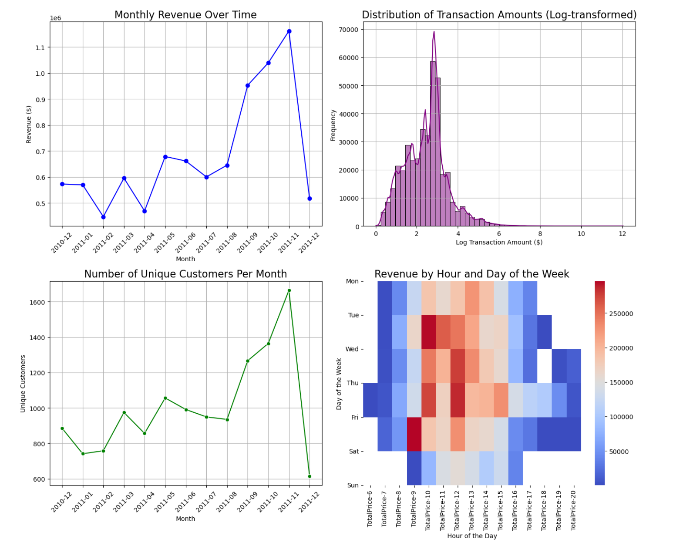
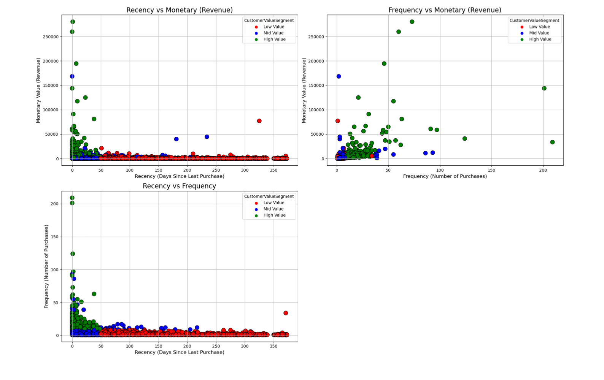

Customer Segmentation Using RFM Analysis
Our Metric
North Star Metric
The North Star Metric (NSM) is a key performance indicator that reflects the core value your business delivers to customers. For an online retail business, it provides a focus on what drives sustainable growth and customer satisfaction.
North Star Metric for Online Retail
For an online retail business, potential North Star Metrics could include:
- Monthly Revenue: The total revenue generated by customers each month. This metric directly reflects the effectiveness of the business in selling products and satisfying customer needs.
- Orders Placed: Tracking the number of orders placed each month, which is a good indicator of customer activity, engagement, and repeat business.
Our Metrics
For this analysis, we focused on the following key metrics:
- Monthly Revenue: Tracks the total amount of revenue generated from all sales each month. This helps monitor overall business performance and growth.
- Monthly Active Customers (MAC): Measures the number of customers who made at least one purchase in a given month. This is critical for understanding customer engagement and activity.
- New Customer Ratio: Represents the proportion of new customers to total active customers each month. This metric helps evaluate customer acquisition and the growth of the customer base.
Overview
This project demonstrates the use of RFM Analysis (Recency, Frequency, Monetary) to segment customers based on their purchasing behavior. By applying clustering techniques to these metrics, we can classify customers into different value groups, enabling more effective targeted marketing and customer retention strategies.
Key Objectives:
- Classify customers into distinct value groups based on their purchasing patterns.
- Derive actionable insights through visualizations to enhance business strategies.
Dataset
The dataset comes from a retail business and contains the following columns:
- InvoiceNo: Unique transaction identifier.
- StockCode: Unique product code.
- Description: Product details.
- Quantity: Quantity of products purchased.
- InvoiceDate: Date of the transaction.
- UnitPrice: Price per unit of the product.
- CustomerID: Unique customer identifier.
- Country: Customer’s country of origin.
RFM Analysis
We calculated three key metrics for each customer:
- Recency: The number of days since the last purchase.
- Frequency: The total number of purchases made by the customer.
- Monetary: The total amount spent by the customer.
Using K-Means Clustering, we grouped customers for each of these metrics into segments and determined the optimal number of clusters using the Elbow Method. This allowed us to create distinct customer groups based on their recent engagement, purchase frequency, and total spending.
Customer Segmentation
We combined the RFM scores to calculate an Overall Score that reflects a customer’s overall value:
- Low Value: Overall Score of 0 to 2.
- Mid Value: Overall Score of 3 to 4.
- High Value: Overall Score of 5 or higher.
These segments allow businesses to tailor their marketing strategies accordingly:
- Low Value: Focus on increasing engagement and purchase frequency.
- Mid Value: Encourage higher spending and more frequent purchases.
- High Value: Retain and reward loyal, high-value customers.
Metrics
The primary metrics used in this analysis are:
- Recency (R): Days since the last purchase.
- Frequency (F): Number of purchases made by the customer.
- Monetary (M): Total revenue generated by the customer.
We also calculated the Overall Score, which combines these metrics to provide a comprehensive view of each customer’s engagement and value.
Visualizations
The following visualizations provide insights into customer activity and revenue trends:
Revenue and Customer Activity Trends
1. Monthly Revenue Over Time: Revenue growth peaks in November 2011.
2. Transaction Amount Distribution: Log-transformed distribution showing mostly small purchases.
3. Unique Customers Per Month: Steady increase in customer base, peaking in November 2011.
4. Revenue by Day and Hour: Peak sales occur on Thursdays and Fridays, between 9 AM and 2 PM.

Monthly Active Customers vs. Revenue
1. Monthly Active Customers Over Time: Active customer count peaks in November 2011.
2. Monthly Revenue Over Time: Revenue closely follows customer activity.
3. Dual Axis Plot: Active customers and revenue show similar growth trends.
4. Distribution of Active Customers: Most months see between 800 and 1,000 active customers.

New Customers and Revenue Trends
1. New Customers Over Time: A sharp decline in new customers over time.
2. New Customers vs. Active Customers: Steady active customers with a lower proportion of new customers.
3. New Customer Ratio vs. Revenue: Higher ratios often correlate with lower revenue.
4. Distribution of New Customer Ratio: Most months have a ratio between 3 and 7.

RFM Clustering Results
Boxplots showing distinct customer clusters for Recency, Frequency, and Monetary metrics. Higher Frequency and Monetary clusters indicate more valuable customers.

Customer Segmentation by Overall Score
Scatter plots visualizing customer segmentation based on the overall score, showing how Recency, Frequency, and Monetary metrics relate to different customer value segments.

RFM Segmentation Scatter Plots
1. Recency vs. Monetary: High-value customers (green) tend to have recent purchases and contribute significantly to revenue, while low-value customers (red) show longer recency periods and lower spending.
2. Frequency vs. Monetary: Customers with high purchase frequency and high spending are classified as high-value, whereas low-value customers have fewer purchases and lower revenue.
3. Recency vs. Frequency: High-frequency customers are generally recent buyers, clustered in the higher-value segments, while low-value customers have longer periods since their last purchase and lower purchase frequency.

Summary
Based on the customer segmentation analysis, the following actions are recommended for each segment:
- High Value Customers: Focus on Improving Retention. These customers already purchase frequently, so the goal is to keep them loyal and engaged.
- Mid Value Customers: Focus on Retention and Increasing Purchase Frequency. Engage these customers to encourage more frequent purchases and increase loyalty.
- Low Value Customers: Focus on Increasing Frequency. The goal is to encourage these customers to buy more often and engage them more deeply.